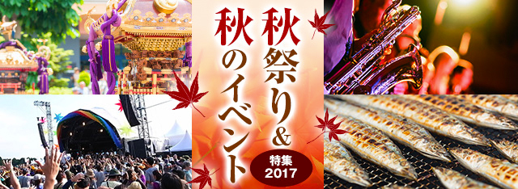

お祭りシーズンもいよいよ佳境の11月！東京をはじめ、神奈川･千葉･埼玉では多くの秋祭りやイベントが開催されます。食欲をそそる秋にぴったりの「グルメフェス」から大人が楽しめるお酒のイベントまで多種多様なラインナップを一挙ご紹介。
見出しのデザインについて
見出しのレベルはクラスを付与することで変更できます。 h2を囲んでいるdivタグの中にクラスを付与することで、デザインを変更できます。 eventtitle--backcolor__default・・・デフォルトの色。
注目の秋祭り＆秋のイベント
.eventtitle--backcolor__subcolor・・・別パターンの色（今回のケースだと金色。）
注目の秋祭り＆秋のイベント
.maintitle--design__border・・・見出しの下にボーダーラインがつくパターンです。
注目の秋祭り＆秋のイベント
角丸の付け方
roundというクラスがついた親要素の子要素にいるimgとtabクラスが角丸になります。
角丸あり
角丸なし
イベント情報カセットについて
同じHTMLで構成されています。
------- カラー設定 -------
メインカラーの値に変動し、他の要素の色が変わる。
メインカラーのHEXカラーを入れてください。
例）
デフォルトカラー：#ac232c
ダークグリーン：#006400
ダークブルー：#37485A
------- コンテンツ非表示設定 -------
カセットの種類は４種類。
セクション内のHTML構文は同じ内容になります。
ピックアップ・・・eventinformation--casset__pickup
リスト・・・eventinformation--casset__lists
特別枠・・・eventinformation--casset__special
強調枠・・・eventinformation--casset__strong
contents--component__title__none・・・H2見出しが非表示になります。
moreinfo__none・・・黄色枠が非表示になります。
tab-color--*__none・・・タブが非表示になります。
.tab-color--mono__none・・・モノクロタブevent--information__label__none 写真上の小見出しの箇所を非表示にします。
.tab-color--orange__none・・・オレンジタブ
.tab-color--strong-red__none・・・ストロングレッドタブ
.tab-color--cyan-blue__none・・・シアンタブ
.tab-color--deep-green__none・・・深緑タブ
.tab-color--blue-magenta__none・・・マジェンダタブ
.tab-color--strong-magenta__none・・・ストロングマジェンダタブ
.tab-color--phthalo-blue__none・・・ブルータブ
.tab-color--brown__none・・・茶色タブ
.tab-color--yellow-green__none・・・黄緑タブ
.event--information__data__none・・・開催日時
.event--information__place_none・・・場所
.event--information__station__none・・・最寄駅
.event--information__toll__none ・・・有料席
.event--information__reserve__none・・・予約期間 }
event--information__*__none・・・テーブルレイアウトの詳細情報の各項目が非表示になります。
デフォルトは全て表示になっていますので、クラスを与えた後にクラスを消すことで表示にすることができます。
イベント情報カセットの「イベント」「グルメ」などのタブはクラスを付与することで非表示にできます。
以下、サンプルです。
イベント・フェア
駅名／都県
イベント
グルメ
音楽
スポーツ
アート・カルチャー
祭り
さんま祭り
紅葉
スイーツ
2017神宮外苑花火大会
神宮の空を鮮やかに彩る花火×人気アーティストの豪華饗宴

キャプションが入ります。キャプションが入ります。キャプションが入ります。キャプションが入ります。
東京三大花火と称される神宮外苑花火大会は、大迫力のスターマインや趣向を凝らした花火はもちろん、人気アーティストによるライブも充実。メイン会場の神宮球場には、デビュー25周年を迎える大黒摩季が登場！名曲とともに約1万2000発の花火が神宮の空を彩る。
打ち上げ数：約1万2000発
例年の人出：32万人
露店：あり
- 開催日時
-
2017年8月20日(日)
19:30花火打ち上げ開始、20:30花火終了予定
※予備日、8月21日(月) 翌日順延。
- 場所
-
明治神宮外苑
- 最寄駅
-
国立競技場、 外苑前、 信濃町、 千駄ヶ谷、 代々木、 北参道、 青山一丁目、 表参道
- 有料席
- 予約期間
- 6月17日(土)より一般発売開始
見出しに「PR」を入れる場合
＜h2＞タグの後ろにclass="square-color__white"と記入するとタグが出ます。